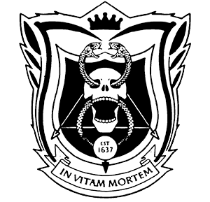
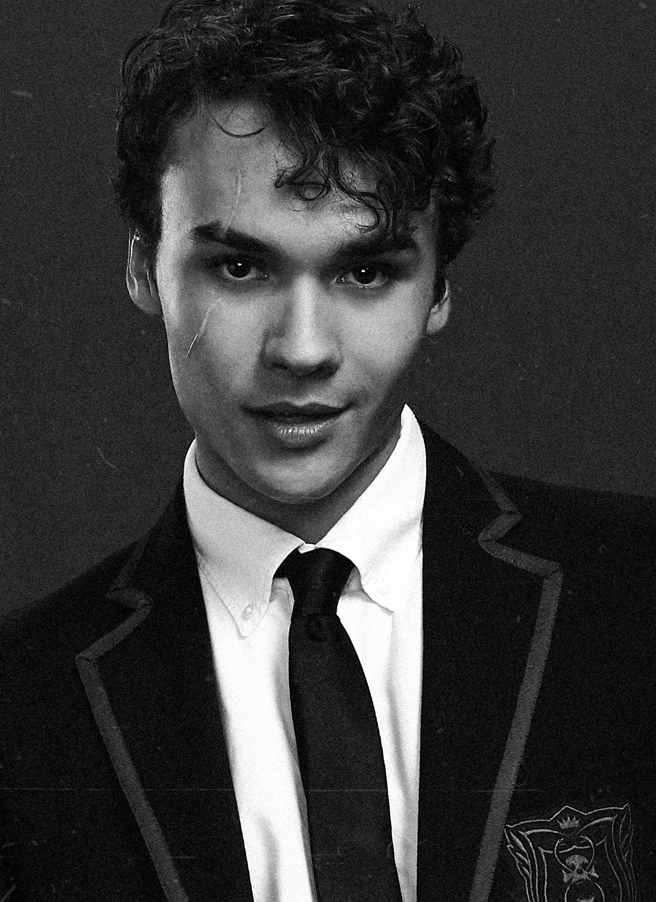
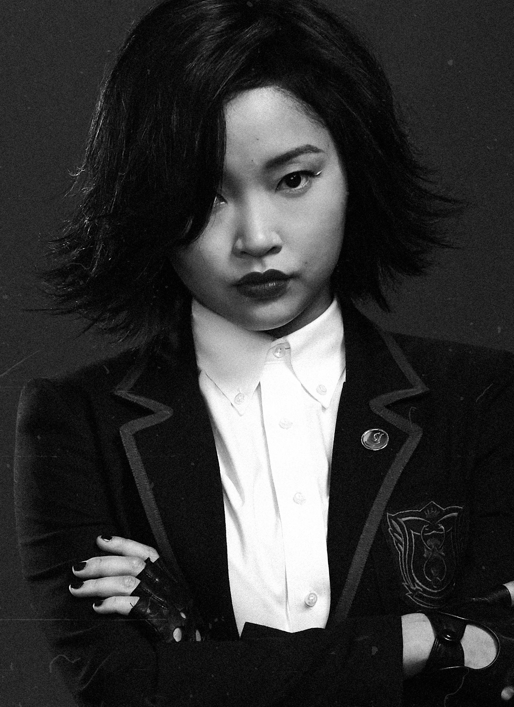
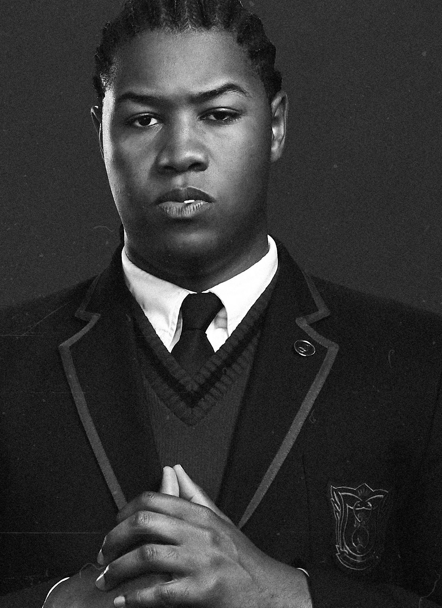
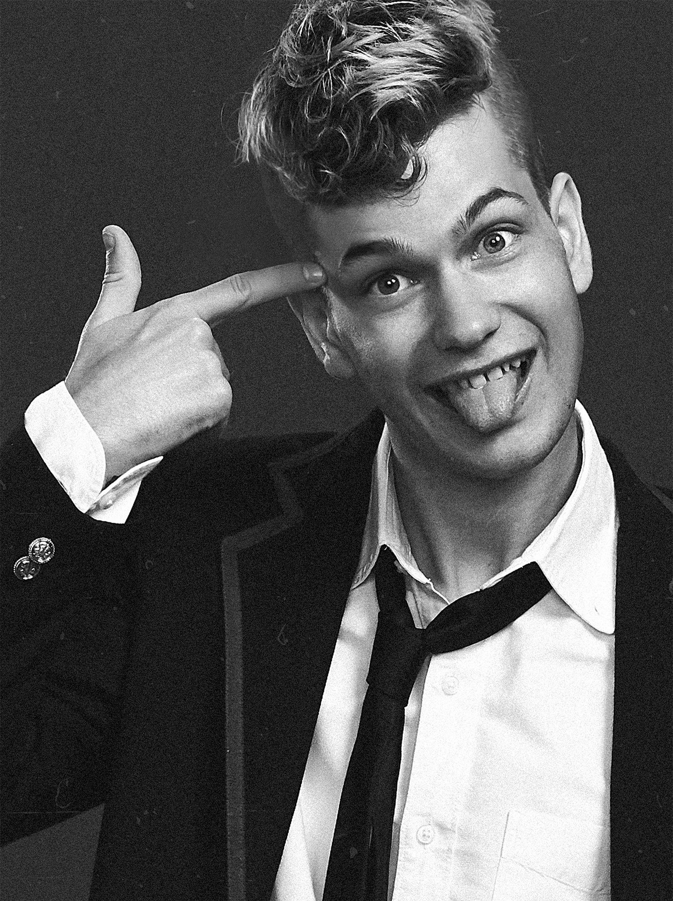
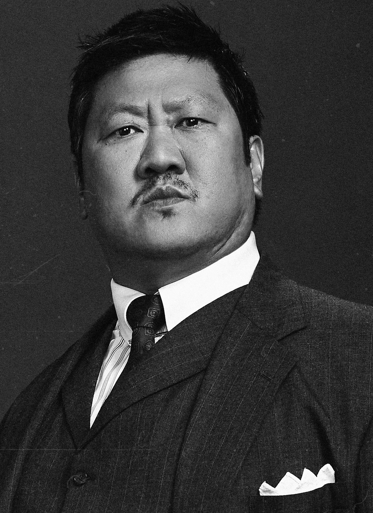

Set in late 1980s San Francisco, a disillusioned teen is recruited to King's Dominion, an elite private academy where students are trained to become assassins. He navigates a brutal curriculum, dangerous social cliques, and his own moral code while training among the children of the world’s top crime families.




Benjamin Wadsworth as Marcus Lopez
Lana Condor as Saya Kuroki
Luke Tennie as Willie Lewis


MarÍa Gabriela de FarÍa as Maria Salazar
Liam James as Billy bennett
Benedict Wong as Master Lin